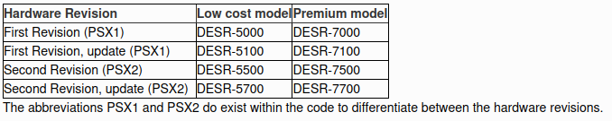

ATA Express
by PhenomMod
ATA Express
Description:
ATA Express is an SDIO to IDE (PATA) emulator. Currently, it is STRICTLY a hard disk emulator, but it can and will be expanded to CD-ROM/DVD emulation eventually.
You can purchase it from Phenom Mod Here, otherwise, if you are in the EU, you can purchase from Here.
Features:
- Up to 2TB microSD
- LBA28 support
- LBA48 support
- CHS mode
- UDMA6 capable
- Master/Slave select for IDE interface
What’s so special about this product compared to current solutions on the market? Nearly every all SD to IDE adapters on the market use the FC1307A chipset. It comes with a buggy firmware, limited to LBA28 (128GB max) compatibility. This doesn't and is upgradable.
Some use cases include:
- Finally max out a PS2 70K. Most mods use the SD to IDE adapters with the 128GB limit
- Portable OG Xbox
- Retain the disc drive in Dreamcast
- Retro PC’s, with CF becoming a rare storage solution, this is another solid state option
- PSX DESR All models should now be supported from May-2026
PSX DESR INSTALL
Rule 0 of PSX Homebrew: The console is a bastard
PSX ATA Express - NULL KEY INSTALL
If you wish to use your own console backup and HDDID, you will be required to follow Nroach44's full written guide HERE. I recommend following that guide as it includes images and is being constantly updated. I also highly suggest reading their other information about the PSX here.
A big thanks to them for letting me use the section I have below.
PREREQUISITES
- A PSX DESR Console
- A memory card with FMCB or PSBBL installed on it.
- An ATA Express from PhenomMod
- A MicroSD Card/MicroSD Express Card
- A USB Drive in Fat32 format
- A PC
Guide
- Carefully install the ATA Express with SD Card into your PSX
- Download the re-install tool for your console version:
- PSX1: PSX1_v1.31_JP.rework.7z
- PSX2: PSX1_v2.11_JP.rework.7z These links may be updated to a new script and tool soon

Here is a handy table to tell if you have a PSX1 or PSX2
- Extract it to the root of your USB drive
- Boot your FMCB / PSBBL Memory Card into a uLaunchELF variant
- Browse to mass:/ and launch HDDTOOL.ELF
- Come back an hour later or so and the system will have rebooted. You'll need to remove your Memory Card and turn off, then back on, the machine.
- It should boot into the XMB.
- You'll likely be missing the channels (including the DV channel on 7500/7700) in the TV section. To get them back, go through the setup wizard (the egg cracking icon) from the settings section.
A huge thanks to NRoach44 for the original written guide, which I recommmend checking out from the link at the start of this section, PhenomMod for the ATA Express, and everyone in the discord server that has been developing and testing things for this stubborn console
Resources/References/Credits
- PhenomMod